Nosotros
 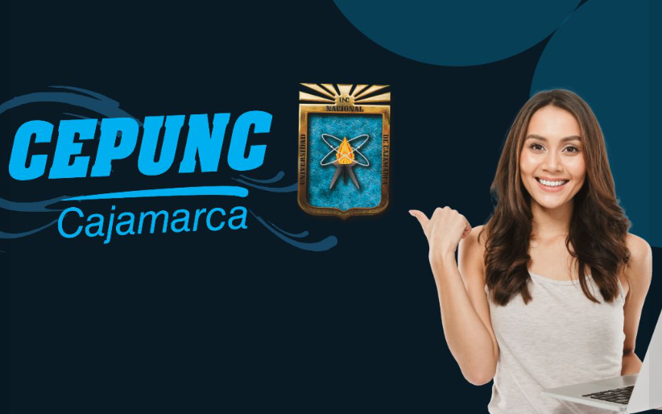
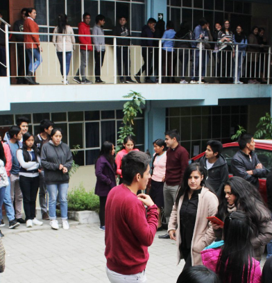
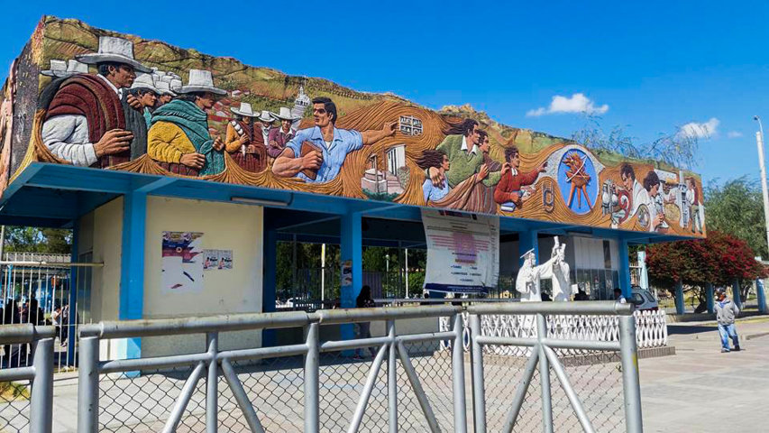
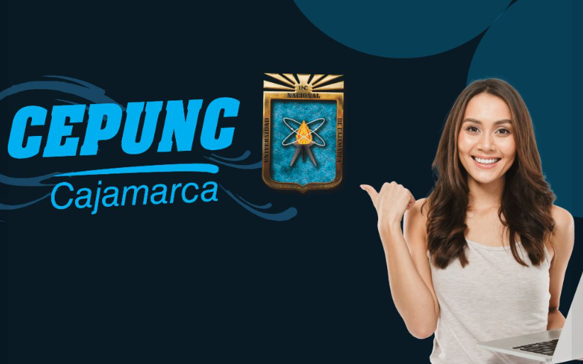
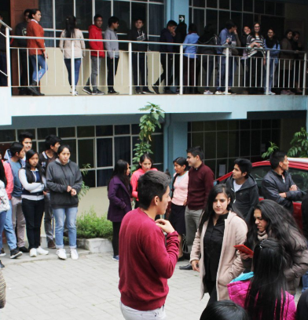
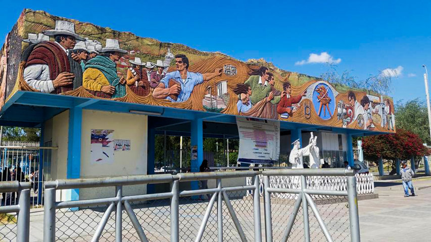
1 Vision
Formar al estudiante egresado de secundaria, para q acceda a una vacante en la Universidad respondiendo eficientemente a la formación académica y profesional.
2 Mision
El Centro de Estudios Pre Universitarios de la Universidad Nacional de Cajamarca es un órgano desconcentrado de prestación de servicios, desarrolla actividades académicas preuniversitarias y genera recursos propios para la Universidad Nacional de Cajamarca. En esta perspectiva, la historia del CEPUNC muestra que a lo largo de estos años, se ha ido construyendo un Centro al servicio de la colectividad cajamarquina con prestigio a nivel regional generando ingresos propios a la Universidad y facilitando un camino a la calidad académica del alumno universitario.
Nuestras sedes
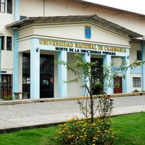
SEDE CAJAMARCA
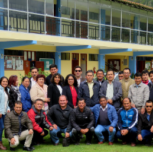
SEDE CELENDIN

SEDE JAEN
Nuestros estudiantes

Clases intensivas
Ciclos regulares
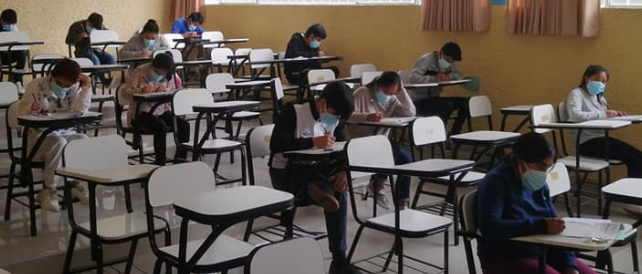
Postulantes
Examen CEPUNC
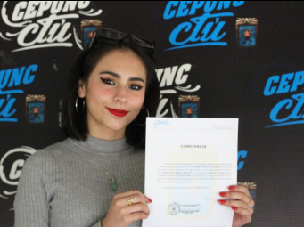
Ingresantes
Ingreso directo a la UNC
Resultados de examenes
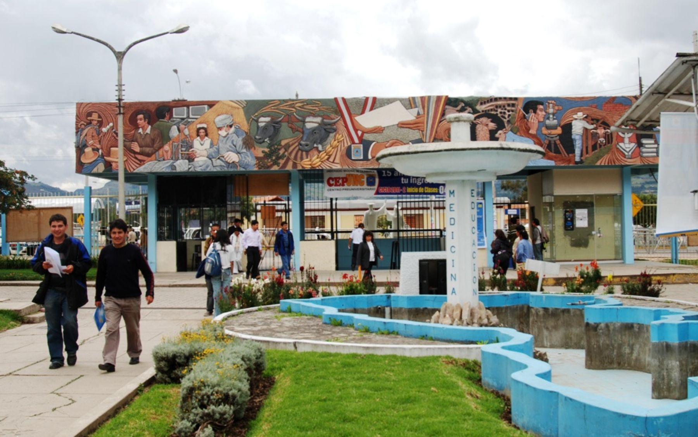
Resultados 2022-1
Has clic aqui
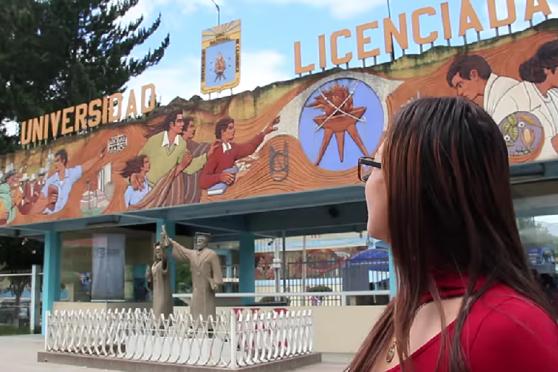